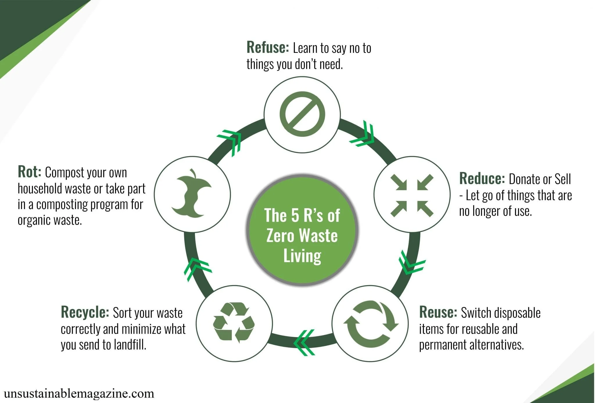

Immediate Risk Reduction Measures
While detailed investigations are being undertaken and the remediation strategy is being developed, emergency risk reduction measures should be put in place immediately to safeguard public health and the environment. These measures should be simple and quick to implement. However, a risk assessment should be undertaken first to avoid risks of further exposure during their implementation. Examples of such measures can include:
- stopping further release of the contaminant into the soil;
- covering the polluted area with an impermeable layer to prevent release of vapours and rain-water runoff and leaching;
- briefing local communities about the risks of the site;
- erecting warning signage;
- securing the site for example with a fence, to restrict access to the public and livestock;
- restricting the use of the land to non-food production;
- warning public and restricting use of harvested crops or livestock products for food; and,
- providing an alternative safe water supply.
Some remediation strategies take years to implement especially where external funding needs to be raised. This is often the case in low to middle-income countries. In the meantime, implementing such emergency measures will ensure that the public is protected and exacerbation of the pollution is minimized. Where there is a long delay between the emergency measures and the implementation of the remediation strategy, the impacted communities and the site should be monitored to ensure that the measures remain effective
Remediation
sustainability is a major consideration in decision-making processes and the implementation of remediation strategies. There are a number of initiatives from international and national organizations to develop sustainable remediation frameworks that aim to balance the environmental, social and economic impacts, both positive and negative, while removing unacceptable levels of risks to human health, water, soils, biodiversity and other receptors of concern. These frameworks also include stakeholder involvement and a mechanism for assessing the sustainability of a particular remediation strategy. Sustainable remediation is now covered by the International Organization for Standardization with ISO standard 18504:2017 “Soil quality – Sustainable remediation. In the United States of America, ASTM International
The procedures for the selection and implementation of strategies to remediate polluted soils are often prescribed in national legislation and supported by guidance documents and frameworks. The national frameworks are generally similar and have the following components.
- Define the remediation objectives.
- Design the remediation strategy.
- implement the remediation strategy.
- Finalize including monitoring and long-term aftercare.
1. Remediation objectives
The remediation objectives will include the desired specification of the soils following remediation,including target levels for the contaminants, and the intended future use of the site. The future use of the site is a major factor in the risk assessment. The process to define the remediation objectives will involve an investigation and characterization of the site and the contaminants, the development of a conceptual site model, and engagement with the regulator and stakeholders. Many national frameworks use a generic of site specific risk assessment and risk reduction approach to determine the remediation objectives (NICOLE and Common Forum, 2013). Other frameworks set two concentration levels for contaminants, a target level and a level above which action is required to remediate the soil. For each contaminant, there may be different levels for agricultural, residential and industrial land uses. In addition, it will be necessary to identify the organizations that will fund the eventual costs of the remediation. Under the “polluter pays” principle, this would include those responsible for causing the pollution or the current owner of the land. For cases where the individual or organization responsible for the pollution cannot be identified or is unable to pay for the remediation, national governments may need establish alternative funding mechanisms.
2. Designing the Remediation strategy
The remediation strategy should be designed to achieve the remediation objectives and should take into account regulatory considerations, assessment of the technology options, risk assessments, and operability studies, cost-benefit and sustainability analysis. Spatial heterogeneity of a polluted site can require separate remediation strategies for different zones. In some cases, the combined application of more than one technology can increase the success of the remediation strategy. Once the technologies have been selected, a detailed remediation action plan should be developed along with supporting elements such as a detailed budget; a procurement plan; a site-specific health, safety and environmental management plan; standard operating procedures; a waste disposal plan; and a monitoring plan. As many of the technologies are site and contaminant specific, it may be necessary to undertake pilot trials to ensure the strategy is effective before confirming the strategy for full-scale implementation. Further engagement with stakeholders and regulatory approval could be necessary before implementation can proceed.
3. Implementing the remediation strategy
Appropriate project management is required to ensure that the remediation strategy is implemented safely and effectively. The strategy should be monitored throughout its implementation to ensure that it is effective in achieving the remediation objectives. Where monitoring identifies divergence from the anticipated remediation outcomes, it may be necessary to review and adjust the strategy including selecting alternative technologies or agreeing to revised remediation objectives with the regulators.
4. Finalization and future care
Once monitoring has confirmed that the remediation objectives have been achieved, the operations can be completed and the site becomes available for the use that was determined in the remediation objective. For remediation technologies that require a long time to complete or only sequester the contaminants, it may be necessary to institute a long-term verification monitoring plan and designate responsibility for the future care of the site. Further details on the procedures to be adopted to address a polluted site may be available within national regulations and guidance documents. As an example, Australia has developed a National Remediation Framework and technical guidance to support its legislation on polluted sites (CRC CARE, 2019). The technical guideline on soil washing includes a flowchart of the remediation steps which is shown in Figure 2 below. The United Kingdom of Great Britain and Northern Ireland Sustainable Regeneration Forum (SuRF-UK) published its framework assessing the sustainability of soil and groundwater remediation that linked to British national legislation3. The national legislation is based on three steps: risk assessment, options appraisal, and implementation of the remediation strategy (SuRF-UK, 2010). Canada also has guidance on approaches for addressing polluted soil and their sustainability that have often been referenced by other countries without such frameworks.
5. Stages in the remediation of site pollution according to National Remediation Framework guideline.

Technologies for remediating polluted soils
1. In situ nature-based technologies
Nature-based soil remediation technologies use soil-dwelling organisms to biodegrade, stabilize or separate the contaminants. The techniques use microorganisms (bacteria, fungi, and archaea), soil macroorganisms, and plants. Often a nature-based remediation strategy will include more than one technique, for example the symbiosis between microorganisms and plant roots can enhance biodegradation. Nature-based technologies are continually improving in terms of the concentration and range of organic and inorganic contaminants that are treatable. Nature-based technologies have been used successfully to treat soils polluted with petroleum hydrocarbons, chlorinated solvents, polycyclic aromatic hydrocarbons, pesticides, as well as trace elements. The times required to reach the remediation objective can vary significantly depending on the technique and concentration and type of pollution. Some ex situ bioremediation can take as little as 12 weeks while phytoremediation of wetlands can take years. Remediation strategies can be expedited by optimizing the conditions in the soil, and through the application of multiple techniques, to stimulate the biological processes. In fact, some studies have showed that the combination of nature-based technologies and application of amendments or designed Technosols accelerate the biogeochemical processes associated to the remediation. Examples include enhanced bioleaching and biovolatilization of arsenic
2. The phytoremediation functions of a plant source for remediating arsenic (As) contaminated soil.

3. Ex situ biological treatment
Ex situ biological treatment requires the soil to be excavated and treated on site or at a specialist soil treatment facility. The bioremediation processes are similar to those used in situ techniques. However, ex situ techniques tend to allow greater control of the bioremediation processes through easier monitoring, control over the homogeneity of the soil, more effective mixing and contact between contaminants and microorganisms, and the effective application of nutrients and amendments. Ex situ processes tend to be faster and more predictable but more expensive than their in situ equivalent. Ex situ processes tend to be more disruptive to the soil structure and its biological communities, and post-remediation rehabilitation can take longer.
Management and adaptation strategies to soil pollution

In some cases, remediation is not feasible due to multiple causes, from the physical characteristics of the site, for example, instability of the terrain, proximity to active volcanoes, high risk of earthquakes, risk of flooding, etc., to the vast extent of the area affected by pollution or the existence of multiple contaminants that require the combination of several techniques, making remediation a very costly and inefficient. There is also the circumstance where the polluted area has high natural (ecological) or scientific value that would be irrevocably destroyed using certain remediation technologies. For these cases, there are a number of management options to mitigate the risk to public health and the environment. It is also possible to adapt the use of the site such that it still provides an amenity value.
1. Natural attenuation
If the site still has a viable soil biota and a natural plant colonization, some natural attenuation of the pollution without any external intervention can occur. Such solutions could be suitable for large areas that have been subject to diffuse pollution. However, the remediation process is very slow and consequently the effectiveness can be limited. Careful assessments need to be undertaken to ensure that the risks of exposure to the contaminants are minimized. This could include allowing the land to remain fallow and to minimize any activities that could allow the contaminants to become available. Working the soil should be avoided as should livestock grazing. The site will require monitoring to check that pollution levels are reducing and to ensure that the risk assessment remains valid
2. Exculsion
In areas with high levels of pollution where there is a high potential for exposure, and there are insufficient funds available to remediate the site, exclusion of all access to the site may be the only solution. If there is a local human or animal population that are vulnerable to the pollution, it is important that they are excluded. It is important that there is some institutional control over the area with the authority and resources to impose and enforce the restrictions. The exclusion can be in the form of fencing or other physical barriers and warning signs. This should be supported by communications programmes to sensitize the population of the dangers to them and their animals of entering the site. The case study below illustrates exclusion as part of a comprehensive risk reduction strategy.
3. Capping with clean soil, hard surface, or other containment material
If the future activities on the site are unlikely to disturb the underlying soil and the hydrogeology of the site allows it, it could be an option leave the polluted soil in situ and to seal the area of pollution with an impermeable layer. This will minimize the effects of wind and water erosion and prevent human or animal contact with the polluted soil. Capping is a temporary solution and should only be considered in cases where there are constraints that prevent best practice solutions from being deployed. The capping could be clean soil, in which case it would be sensible to install an impermeable membrane such as geotextile and high-density polyethylene liner, or a layer or tier system with materials of low permeability such as clay. Alternatively, a concrete or asphalt slab can be installed over the site. As well as minimizing water ingress and therefore the potential for leaching, the membrane serves to avoid the clean capping materials becoming polluted. This is important for any subsequent intervention to remediate the site. It will be necessary institute a mechanism for the long-term management and monitoring of the site to ensure that the cap continues to prevent access to or escape of the polluted soil and that the contaminants are not migrating in groundwater. To protect the integrity of the impermeable layer plants grown in the clean soil should be limited to an herbaceous cover and shrubs with a shallow root system.
Capping is not considered one of best technologies available. A key point associated to unsustainability is the provenience of the clean soil since it can be a natural soil extracted from other local areas or even the use of compost as clean soil.
4. Changes in agricultural practise
Change of land-use can help to maintain the beneficial use and value of the contaminated lands.
Change of agriculture practice
For healthy soil biota and nutritious crops, the presence of essential trace elements, such as copper, iron and zinc, is important for metabolic processes. At elevated levels, however, they can cause adverse effects. Non-essential trace elements such as arsenic, cadmium, lead and mercury are toxic even in very low concentrations (Rai et al., 2019). Where soil has become polluted with marginally elevated levels of trace elements, by changing agricultural practices it may still be possible to reduce the risks of them entering the food chain. It is also possible to reduce the plant uptake of trace elements by adding organic and inorganic amendments such as manures, biosolids, lime, zeolites, biochar or iron oxide to the soil. Risk is reduced by changing from the cultivation of crops with higher accumulation rates such as leafy vegetables like spinach and lettuce to less sensitive ones such as pulses, tubers and certain grains. Crop rotation can also influence the rate of uptake. Rhizosphere effects of some plants may affect the bioavailability of a trace element to the following cropping cycle. For example, citric acid released by lupins can increase the uptake of cadmium in wheat planted in the following rotation.
In cases where agricultural land has become more heavily polluted and it is no longer safe to grow crops for human or animal consumption, it may be possible to continue agriculture with the cultivation of non-edible crops for fibre (e.g., cotton or flax), trees for timber, or biomass for renewable energy generation. Consideration, however, should be given to the future use of the products and the potential impact of accumulated trace elements. For example biomass power generation process could use pyrolysis or gasification processes to avoid the dispersal of the accumulated trace elements.
Change to non-agricultural use
Many national regulations set standards for maximum contaminant levels for different types of land use. Residential, parkland and agricultural land generally have more stringent limits than land designated for commercial or industrial use. The Canadian Council of Ministers of the Environment (CCME) provides useful guidance and soil quality standards for a range of contaminants (The Canadian Council of Ministers of the Environment, 2007, 2014). For sites where the levels of contaminants remain too high for agricultural use, it may be possible to change to a less sensitive use such as manufacture, industry or a civic amenity such as a car park. The construction of buildings and hard surfaces above stabilized and immobile polluted soils will prevent wind and water erosion and contaminant leaching, and provide a beneficial use of the land. Such solutions would require approval under the national regulations. It could be an appropriate approach for sites located close to urban environments. As the contaminants will remain in close proximity to the new construction, careful risk assessments should be undertaken to ensure that the potential for exposure is minimized. The site should be regularly monitored to check that the contaminants remain immobile and that the risks of exposure are acceptable.
Renewable energy generation
Where sites are not suitable to be returned to agricultural, residential, commercial or industrial use, conversion for renewable energy generation is an option. Sites with residual contamination, or where the contaminants have been stabilized or sequestered, for example a capped landfill, abandoned mine, or a brownfield site are potentially suitable for the construction of photovoltaic cells or wind farms. These sites can have significant advantages over the use of undeveloped open space or green field sites. They are often close to users of power such as cities or industrial areas and can leverage existing infrastructure by linking to power lines. It is often more acceptable to local stakeholders to utilize an abandoned site rather than developing in an undeveloped landscape. The revenue from power generation can assist the funding of on-going maintenance and monitoring costs of the site. In cases where a remediation strategy will take a long time to implement, such as in natural attenuation or phytostabilization, it is possible to install renewable power generation during the implementation phase. The US EPA actively encourages the development of such renewable energy generation schemes as part of its Re-Powering programme.